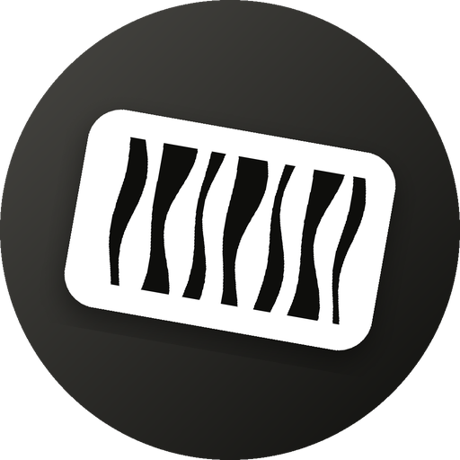
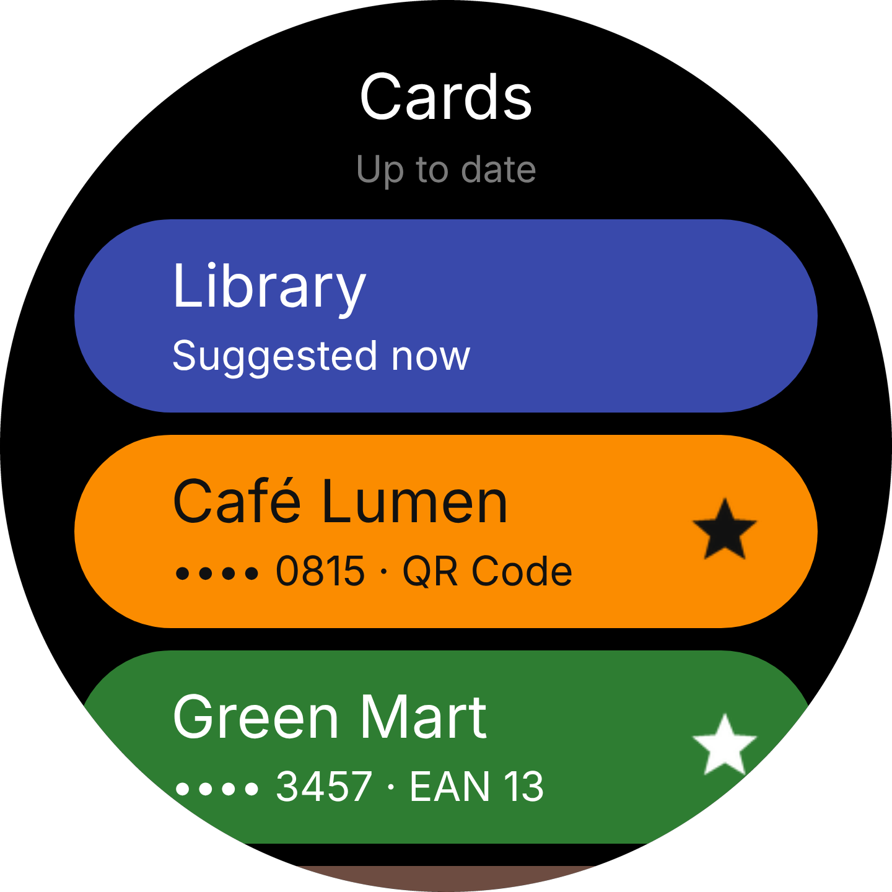
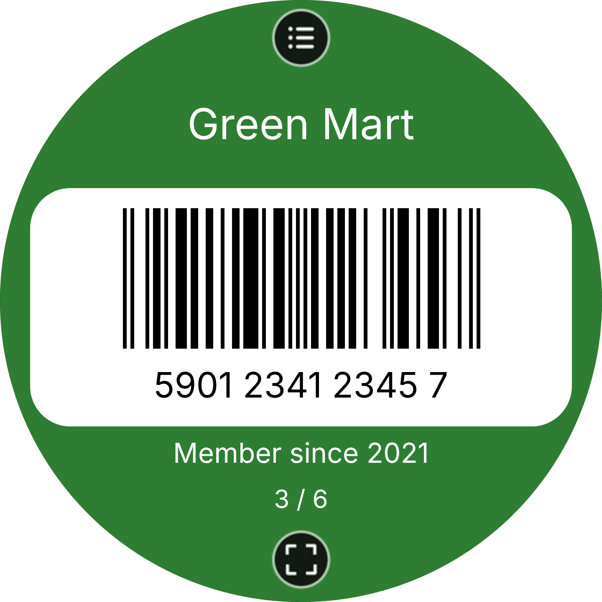
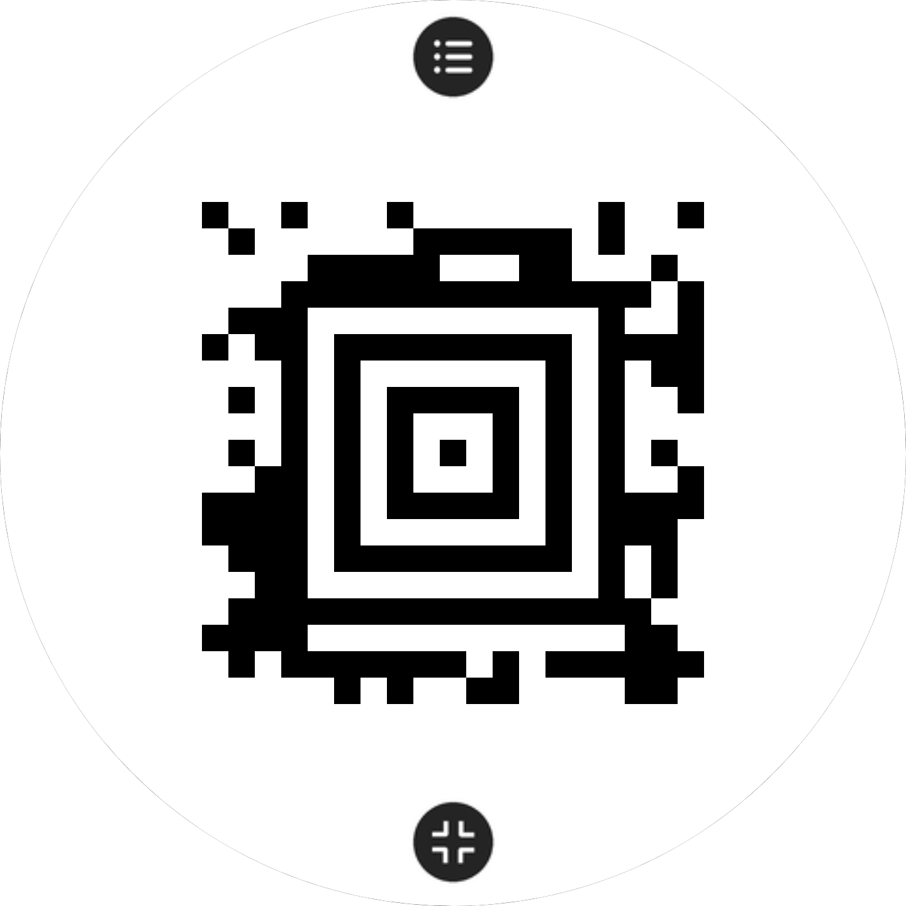
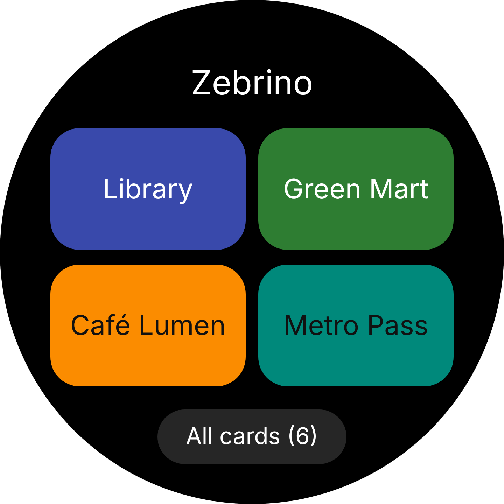

01
Open a card, the screen does the rest
Full brightness, the screen kept awake, and a barcode drawn pixel for pixel, the way scanners like it. Turn the crown or swipe to the next card.

zebrinoLoyalty, library, gym and membership cards on your wrist, sharp enough for any checkout scanner.
Find Zebrino in the Zepp app

A real Code 128, drawn by Zebrino's own encoder. Scan it: it reads zebrino.app.
Full brightness, the screen kept awake, and a barcode drawn pixel for pixel, the way scanners like it. Turn the crown or swipe to the next card.
One tap turns the whole screen into the code. QR, Aztec, Data Matrix, PDF417 and every common store barcode. It stays full screen while you flip cards.

Bakery on weekday mornings, gym on Thursday evenings. Zebrino learns your routine on the watch itself and puts the right card on top. Nothing is sent anywhere.
Add the widget or the shortcut card and your favourite cards open straight from the watch face.

Type the number printed under a barcode in the Zepp app: Zebrino recognises the type and shows you the real barcode before it reaches your watch. Coming from Catima? Bring all your cards across.
In the Zepp app: open the Store, search for “Zebrino” and install it on your watch.
In the Zepp app, go to Profile › your watch › App settings › Zebrino. Type the number printed under the barcode. Zebrino recognises the barcode type and shows a live preview. Cards reach your watch the next time you open Zebrino on it.
Yes, with your phone's camera: open zebrino.app/scan in your phone's browser, scan each card, check it and tap Copy for Zebrino. Then paste it in Zebrino › Import › Scan with your phone's camera. Barcodes are read on your phone; nothing is uploaded.
Every round Zepp OS watch with API level 3.6 or later, from 360 to 480 pixel screens, including the Amazfit Balance and Balance 2.
Yes. Share cards from Catima and paste the links, or paste the catima.csv file from a Catima export. You choose which cards to import; duplicates are skipped.
Tap the button under the barcode for full screen, and keep “Full brightness for scanning” on in the settings. Check the barcode type in the card editor matches the one on your physical card. Still stuck? Write to support@zebrino.app.
No. Your cards are stored on the watch. You only need the phone to add or change cards.